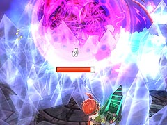

謎の球体の影響で、普段の戦闘とは比べものにならないほどジャンプの高さ、浮遊時間が延びるので、そのことも頭に入れて行動してください。
真ザハールは2 つの状態があり、それは「ラグナの攻撃が利く状態」と「魔法やペットの攻撃が利く状態」です。
それぞれの見た目は異なるので、戦闘中ザハールがどちらの状態かを確認しながら攻撃すると効果的です。

(ラグナ攻撃が利く状態)
(魔法などが利く状態)
ラグナの場合は、基本的にザハールの足を狙ってください。足以外の場所を攻撃してもきちんとダメージは入ります。攻撃のタイミングとしては、ザハールの攻撃の後にできるスキを狙うのが安全です。
アルウェンの場合は、ザハールの攻撃中などに「焦熱の魔法」や「常闇の魔法」で近距離・遠距離のどちらの場合でも攻撃ができます。
ルナ＝ムンドゥスで戦う場合(G-コロッセオで戦う場合は関係ないはず)において、ボス戦開始直後から攻撃をしてはだめな場合があります。これは、上の画像にある紫の球体をザハールが作るスキがなくなり、主人公のジャンプできる高さや時間が普段のままの状態で戦わなければならなくなるからです。
ザハールの攻撃はかなりの数があるり、中にはよけきることが非常に困難なものもがあります。
まず、左右の腕を使ったパンチですが、パンチする前にゆっくりと腕を動かすのですぐに分かります。パンチの効果は2種類あり、ただ風を起こし主人公たちを吹き飛ばす場合と、氷を出す場合があるります。そのため、触れなければいいという問題ではないことに注意してください。

次に、ジャンプした後に周囲に氷の柱が立つ攻撃があります。これは、ザハールの着地と同時にこちらがジャンプし、浮遊中に安全地点を探せば問題ありません。